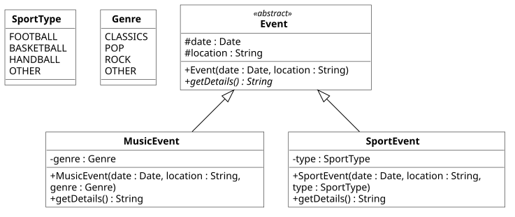

Praktikum 5: Abstrakte Klassen und Enums
In diesem Praktikum wollen wir die Implementierung von abstrakten Klassen sowie die Nutzung von Enums in Java erlernen.
🚀 Lernziele
Sie können:
- Die Notwendigkeit bzw. den Nutzen von abstrakten Klassen bewerten
- Abstrakte Klassen in Java umsetzen
- Enums zielführend und korrekt nutzen
🤔 Vorbereitung
Bitte bearbeiten Sie die folgenden Aufgaben vor Ihrem Praktikumstermin. Diese sollen sicherstellen, dass Sie die gestellten Praktikumsaufgaben inhaltlich und zeitlich schaffen.
Aufgaben:
- Enums: Bitte lesen Sie noch einmal, wie diese in Java genutzt werden (siehe Vorlesung 5).
- Abstrakte Klassen: Lesen Sie noch einmal genau nach, wie abstrakte Klassen in Java umgesetzt werden. Schauen Sie sich dazu bitte auch nochmal genau die Beispiele an.
- Cursor-Tasten als Enum: Erstellen Sie im folgenden Code-Fenster den Enum-Typ CursorKey mit den Zuständen UP, DOWN, LEFT und RIGHT.
📝 Pflichtaufgaben (1 Bonuspunkt)

Hinweis: Abstrakte Methoden werden in UML kursiv dargestellt, z.B. + methode(int param) : void
1 - Darstellung verschiedener Events 📅
In dieser Aufgabe soll eine abstrakte Klasse Event entwickelt werden. Diese soll durch die beiden Klassen SportEvent und Concert erweitert werden. Setzen Sie bitte alle Klassen so um, wie im Klassendiagramm dargestellt.
Anforderungen:
- Enum SportType: Bitte implementieren Sie einen Enum SportsType. Die möglichen Werte können dem Klassendiagramm entnommen werden.
- Enum Genre: Bitte implementieren Sie einen Enum Genre. Die möglichen Werte können dem Klassendiagramm entnommen werden.
- Umsetzung Klassendiagramm: Erstellen Sie bitte alle Klassen inkl. Methoden und Attribute, so wie es im Klassendiagramm dargestellt ist.
- Methoden showDetails: Die Methode showDetails soll alle Informationen des jeweiligen Events darstellen. Achten Sie darauf, dass die Klasse Event selbst auch wichtige Informationen enthält und jede Klasse zusätzlich noch eigene Informationen zum Event vorhält. Bitte geben Sie alle Informationen aus.
- Main.java: Legen Sie in der Main testweise verschiedene Events (unterschiedliche Typen) an. Fassen Sie alle Events in einer gemeinsamen Liste zusammen und gebe Sie diese anschließend (mit einer Schleife) aus.
Hinweis: Es ist nicht notwendig, dass Sie die Ausgabe schon perfektionieren. Es ist hier ausreichend, wenn Sie jedes Event (inkl. aller Details) in einer Zeile ausgeben.
⭐ Zusatzaufgaben (1 Bonuspunkt)
2 - Erweiterungen für die Event-Klassen
In dieser Aufgabe können Sie die entwickelten Event-Klassen noch weiter ausbauen. Beachten Sie dazu die folgenden Anforderungen. Seien Sie hier gern kreativ!
Anforderungen:
- Darstellung: Geben Sie die Events über mehrere Zeilen aus. Nutzen Sie dabei gern auch Ascii-Zeichen wie ⚽️, 🏀 , 📅 usw., um eine für Nutzer:innen ansprechendere Darstellung zu erreichen. Bitte trennen Sie die einzelnen Events durch bspw. horizonalten Linien o.Ä. voneinander ab.
- Weitere Fachklassen: Erweitern Sie die Event-Klassen um mind. eine weitere Klasse, die sich von den bestehenden abgrenzen lässt. Nutzen Sie bitte auch wieder mind. einen Enum-Typ, um verschiedene Ausprägungen (siehe auch SportsType, Genre) einzubeziehen.
- Erweiterung der Main: Erzeugen Sie Objekte Ihrer neuen Klasse und fügen Sie diese Ihrer bestehenden Liste hinzu.
Ergänzen Sie Ihre Ideen gern hier (Speichern und Laden der vorhergehenden Aufgabe) oder fügen Sie es direkt im vorhergehenden IDE-Fenster hinzu.